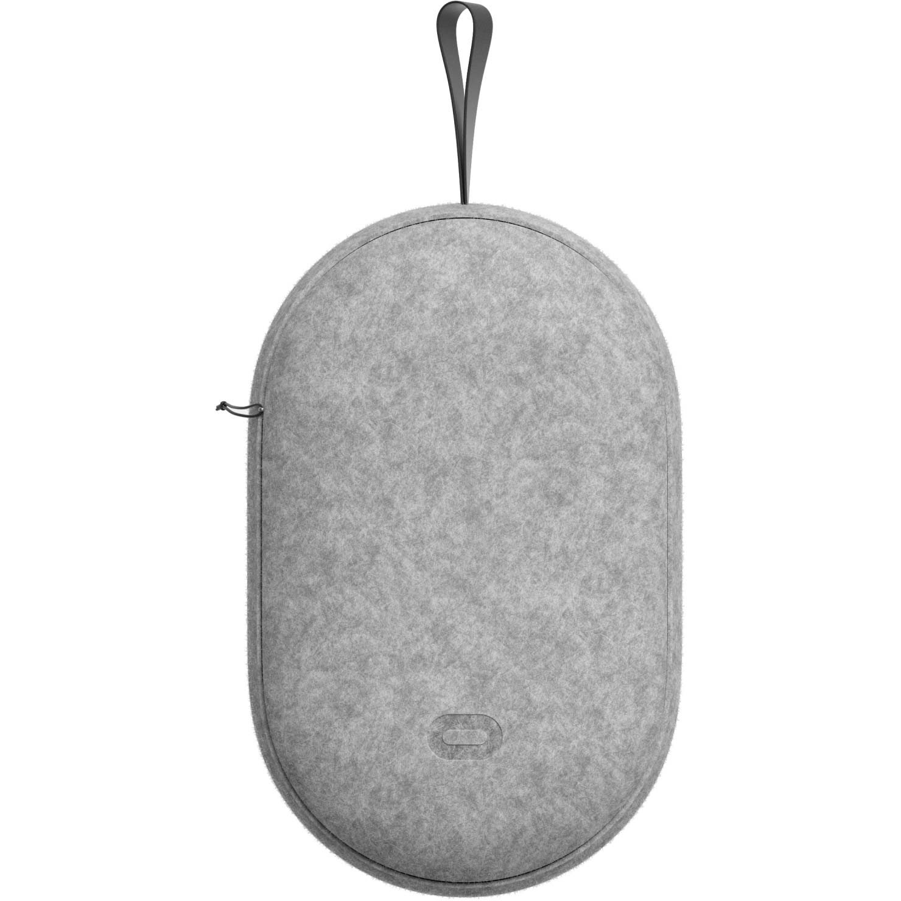

Support
FAQ
- To start, plug the charging cable into your Dive Headset and a power source to begin charging it. The charging indicator will turn green once it's fully charged. If you haven't already charged your Dive, we recommend keeping your headset connected to a power source while it runs the initial updates.
- Once the updates are finished, put on the headset, making sure to tighten the straps
- When the headset is strapped on, simply click the power button. After this, a virtual guide will take place in the headset which will further instruct you.
Yes you can! When the initial setup occurs, it will allow you to change the language. We currently have:
- Czech
- Danish
- Dutch
- German
- Greek
- English (US)
- English (UK)
- Finnish
- French
- Italian
- Japanese
- Korean
- Norwegian
- Polish
- Portuguese (Brazil)
- Portuguese (Portugal)
- Romanian
- Russian
- Spanish (Spain)
- Spanish (LATAM)
- Swedish
- Turkish
- Simplified Chinese
- Traditional Chinese (Hong Kong)
- Traditional Chinese (Taiwan)
To safely carry your Dive headset, please use the complimentary carrying case which comes with the product. Simply place the headset inside and zip it up.

There are a few best practices you can follow to maximise the battery life of your Dive which are outlined below.
Power off when not in use
To maximise the life of your internal battery, we recommend that you fully power down, or turn off, the device when it's not in use, rather than just putting it to sleep. This is especially important if you'll be travelling with your Quest 2 or Quest, or carrying it in a bag or a case.
To turn your headset off, hold the power until the indicator light on the front of the headset turns off, and the power down chime is played.
Unplug when fully charged
Leaving your Dive on the charger after it has been fully charged can reduce the overall battery life over time. When your headset has finished charging, the indicator light on the side of the headset will go from red to green. When this happens, unplug your headset. If you aren't planning to use your headset after charging, power it off after unplugging.
Use the provided charger
When charging your Dive, use the charger that was included in the box. While you may be able to charge your headset's battery with chargers from other devices, your headset and its included charger were designed and tested to work optimally together and to maximise the performance of your headset.
To turn off your Dive headset:
When you aren't wearing your headset:
- Press and hold the power button for 10 seconds.
- Press and hold the power button until you see a shut-down menu in VR.
- In the shut-down menu, select Power Off.
Your Dive headset will update automatically when connected to Wi-Fi and turned on. To make sure that your software updates automatically, make sure that you:
- Charge your headset.
- Keep your headset turned on.
- Keep your Dive or Quest connected to Wi-Fi.
- Allow your headset to sit on a flat surface without moving the headset or blocking the inside sensor for an extended period of time.
If you're having trouble with your Dive for any reason, you can try rebooting it to resolve the issue. To reboot your headset:
- With your headset on, hold the power button on the right-hand side of your headset down until you're prompted with a shut-down screen.
- Select Restart to reboot your Quest 2 or Quest.